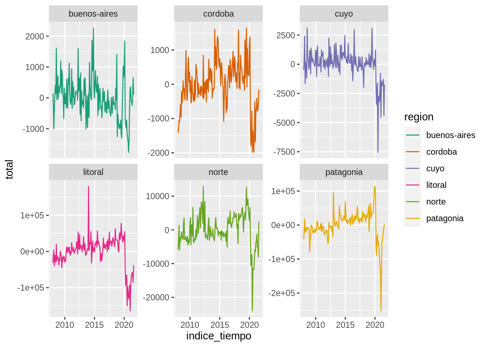

Capítulo 10 Reportes II
Durante este curso fuiste creando varios documentos con R Markdown en HTML. Este es un formato que tiene un montón de flexibilidad, pero seguramente no es el único que necesitás. Casi seguro que los informes los tengas que presentar en formato PDF o, incluso, ¡en papel impreso! {Rmarkdown}, y todo un amplio ecosistema de otros paquetes, permite generar documentos en múltiples formatos usando el mismo archivo de texto plano.
10.1 Eligiendo el formato de salida
Ya habrás visto esto cuando creás un archivo markdown nuevo, RStudio te permite elegir entre tres formatos de salida:

Cuál es el formato de salida de un archivo de R Markdown se determina principalmente con la opción output en el encabezado yaml. Si mirás el encabezado del archivo R Markdown de ejemplo vas a ver que la opción output dice html_document.

Ese html_document no es otra cosa que una función de {Rmarkdown} llamada html_document. Como te podrás imaginar, {Rmarkdown} tiene una serie de otras funciones que definen formatos de salida. Los dos que seguramente te van a servir más son pdf_document y word_document que justamente generan PDFs y archivos de Word, respectivamente.
Para crear un documento de R Markdown que genere un archivo PDF basta con cambiar el output en el encabezado por esto:
Para que el documento se genere correctamente hace falta instalar LaTeX, que es un sistema de composición de textos. Aunque parezca mentira, la mejor forma de instalar LaTeX para usar R Markdown es instalando el paquete {tinytex} con install.packages("tinytex") y luego correr tinytex::install_tinytex(). Esto va a instalar una versión pequeña de LaTeX en un lugar donde luego {Rmarkdown} lo puede usar. Esta es la forma altamente recomendada para generar PDFs con R Markdown que va a evitarte un montón de dolores de cabeza.
Análogamente, podés generar un archivo de word cambiando el output así:
Y ya está. En la gran mayoría de los casos no vas a tener que modificar nada más del código ni el texto.
Desafío
Agarrá el reporte que estuviste armando en los desafíos o alguno que usaste durante el curso y compilalo en PDF y luego en Word.
10.2 Personalizando la salida
Cada función de formato viene con sus opciones de personalización que podés acceder leyendo su documentación. Para ver la documentación de html_document, usa este comando:
Vas a ver que tiene un montón de argumentos que modifican la salida. La forma de setear estos argumentos en un documento de R Markdown es, de nuevo, en el encabezado. Cada argumento de la función de salida (html_document en este caso) es un elemento debajo de la función de output.
Por ejemplo, para que un documento de html tenga una tabla de contenidos hay que setear el argumento toc (de table of contents) a TRUE. En el encabezado, esto queda así:
Conviene mirar eso con un poco de detenimiento porque requiere “traducir” código de R –cual los argumentos de una función se fijan entre paréntesis y con =– en código de yaml –donde los argumentos de la función son una lista cuyos elementos se definen con :.
En R lo que vemos como html_document(toc = TRUE) se traduce a yaml como
Si vas a la ayuda de pdf_document vas a ver que también tiene un argumento llamado toc. Algunos argumentos son compartidos, lo cual hace que se aún más fácil generar un mismo reporte en muchos formatos haciendo muy pocos cambios.
Una forma rápida de hacer tus informes más vistosos es cambiarle el tema visual. html_document permite elegir entre una serie de temas usando el argumento theme. Por ejemplo, poniendo esto en el encabezado, generás un documento HTML con un fondo oscuro
Desafío
Andá a la ayuda de html_document y fijate cuáles son los valores válidos para el argumento theme. ¡Probá algunos!
10.3 Reportes parametrizados
Es muy común tener que hacer un reporte cuyo resultado dependa de ciertos parámetros.
Por ejemplo, podrías tener un reporte que analiza la evolución de la expectativa de vida de Argentina con el siguiente código
library(readr)
library(dplyr)
library(ggplot2)
paises <- read_csv("datos/paises.csv")
paises %>%
filter(pais == "Argentina") %>%
ggplot(aes(anio, esperanza_de_vida)) +
geom_line()
Si ahora querés hacer el mismo reporte pero para Uruguay, tenés que abrir el archivo y modificar la llamada a filter para quedarte sólo con ese país:
library(readr)
library(dplyr)
library(ggplot2)
paises <- read_csv("datos/paises.csv")
paises %>%
filter(pais == "Uruguay") %>%
ggplot(aes(anio, esperanza_de_vida)) +
geom_line()Si el reporte es largo y usa el nombre del país en múltiples lugares cambiar “Argentina” por “Uruguay” puede ser tedioso y propenso a error, ya que te obliga a modificar muchas partes del código. Y si después tenés que hacer el mismo reporte para Chile…
En estas situaciones podés crear un reporte parametrizado. La idea es que el reporte tiene una serie de parámetros que puede modificar la salida. Es como si el archivo de R Markdown fuera una gran función con sus argumentos!
Para generar un reporte parametrizado hay que agregar un elemento llamado params al encabezado con la lista de parámetros y sus valores por default.
Luego, en el código de R vas a tener acceso a una variable llamada params que es una lista que contiene los parámetros y su valor. Para acceder al valor de cada parámetros se usa el operador $ de la siguiente manera:
## [1] "Argentina"De esta manera, el código original se puede modificar para usar el valor del país almacenado en params$pais
library(readr)
library(dplyr)
library(ggplot2)
paises <- read_csv("datos/paises.csv")
paises %>%
filter(pais == params$pais) %>%
ggplot(aes(anio, esperanza_de_vida)) +
geom_line()Y ahora el mismo código puede funcionar para distintos países. Para crear reportes distintos para cada país sólo hay que modificar el valor del parámetro en el encabezado:
Desafío
Agregá al menos un parámetro al reporte que venís armando.
10.4 Control de chunks
Si te acordás, en la sección de reportes I te dijimos que un chunk tiene una pinta como esta:
```{r nombre-del-chunk}
Ponerle nombre al chunk no es obligatorio pero está bueno para tener una idea de qué hace cada uno, lo cual se vuelve más importante a medida que un reporte se vuelve más largo y complejo. Pero lo que no dijimos es que además del nombre, entre las llave se pueden poner un montón de opciones que cambian el comportamiento y la apariencia del resultado del chunk.
Para cambiar las opciones de un chunk, lo único que hay que hacer es listarlas dentro de los corchetes. Por ejemplo:
```{r nombre-del-chunk, echo = FALSE, message = FALSE}
```
Hay una serie de opciones particularmente importante es la que controla si el código se ejecuta y si el resultado del código va a quedar en el reporte o no:
* `eval = FALSE` evita que se corra el código del chunk, de manera que tampoco va a mostrar resultados. Es útil para mostrar códigos de ejemplo si estás escribiendo, por ejemplo un documento para enseñar R.
* `echo = FALSE` corre el código del chunk y muestra los resultados, pero oculta el código en el reporte. Esto es útil para escribir reportes para personas que no necesitan ver el código de R que generó el gráfico o tabla.
* `include = FALSE` corre el código pero oculta tanto el código como los resultados. Es útil para usar en chunks de configuración general donde cargas las librerías.
Si estás escribiendo un informe en el que no querés que se muestre ningún código, agregarle `echo = FALSE` a cada chunk nuevo se vuelve tedioso. La solución es cambiar la opción de forma global de manera que aplique a todos los chunks. Esto se hace mediante la función `knitr::opts_chunk$set()`, que setea las opciones globales de los chunks que le siguen. Si queŕes que todos los chunks tengan `echo = TRUE` crearías un chunk así:
```{r setup, include = FALSE}
knitr::opts_chunk$set(echo = TRUE)
```
Generalmente tiene sentido poner esto en el primer chunk de un documento, que como suele ser cuestiones de configuración del reporte, también conviene ponerle `include = FALSE`.
Habrás visto que a vece algunas funciones escupen mensajes sobre lo que hacen. Por ejemplo, cuando `read_csv` lee un archivo describe el tipo de dato de cada columna:
```r
paises <- read_csv("datos/paises.csv")## Rows: 1704 Columns: 6## ── Column specification ────────────────────────────────────────────────────────
## Delimiter: ","
## chr (2): pais, continente
## dbl (4): anio, esperanza_de_vida, poblacion, pib_per_capita##
## ℹ Use `spec()` to retrieve the full column specification for this data.
## ℹ Specify the column types or set `show_col_types = FALSE` to quiet this message.Esto es útil cuando uno está haciendo trabajo interactivo pero en general no quiere que quede en el reporte. Para que no muestre estos mensajes basta con poner la opción message = FALSE
{r message = FALSE} paises <- read_csv("datos/paises.csv")
En general no pasa nada si ignorás los mensajes. Son cuestiones diagnósticas extra que sirven para que vos, como humano, te enteres de lo que hizo una función. Distinto son las advertencias, o “warnings”. Una advertencia te está diciendo que hay algo “raro” en el código que puede significar que hay algo mal. No llega al nivel de error, que es algo que literalmente “no computa”. Por ejemplo, sqrt tira una advertencia cuando recibe números negativos.
## Warning in sqrt(-1): NaNs producedSi un chunk tira una advertencia que es esperable pero no querés que aparezca en el reporte, podés ocultarlas con la opción warning = FALSE.
{r warning = FALSE} i <- sqrt(-1)
Finalmente, una opción tan poderosa como peligrosa es cache = TRUE. Lo que hace es que en vez de correr el código de un chunk cada vez que kniteás el documento, guarda el resultado del chunk en el disco para reutilizar la próxima vez que crees el reporte. Esto es muy cómo si un chunk se un código que tarda mucho en correr. Por ejemplo el siguiente chunk va a tardar 10 minutos en correr la primera vez que knitees el reporte, pero luego va a ser mucho más rápido:
{r cache = FALSE} datos <- funcion_que_tarda_10_minutos(x)
{knitr} es bastante inteligente y va a invalidar la cache si cambia el código del chunk. Pero, ¿qué pasa si cambiás algo del código previo que cambia el valor de x o incluso el funcionamiento de function_que_targa_10_minutos? {knitr} no se da cuenta y va a usar la cache, resultando que datos va a tener un valor incorrecto. Hay formas de decirle a {knitr} de qué depende cada chunk y así obtener una cache más “inteligente” pero es algo que se vuelve complicado muy rápido.
El resumen es usar la cache sólo cuando es imprescindible.
Desafío
Guardá el cógido de esta u otra sección yendo a Código → Descargar Rmd arriba de todo a la derecha. Mirá los chunks y las opciones que están puestas. ¿Por qué usamos cada opción en cada chunk?